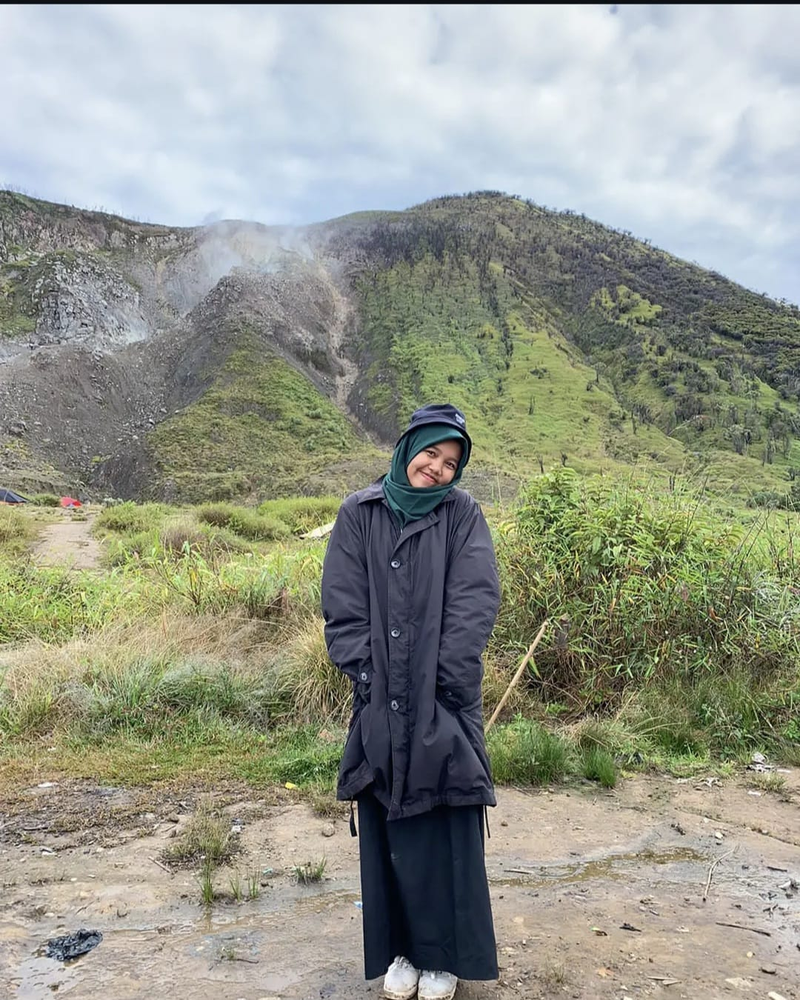

Saat iniSMP N 2 Lembah Gumanti
StudiS2 Sastra, Universitas Andalas
nama saya
Dara Puspa Mulyana
Guru
Mahasiswa S2 Sastra
Penulis
Saya mengajar di kelas pada pagi hari, membaca dan menulis sastra sepanjang sisa waktu, dan percaya keduanya saling menumbuhkan.

ps. fotonya cakep banget ya
2Sekolah tempat mengajar
S2Sastra, sedang ditempuh
SumbarTempat saya berkarya
tentang saya!
Cerita di balik kelas
Mengajar dengan telinga yang mau mendengar.
Saya guru di SMP N 2 Lembah Gumanti yang sedang menempuh S2 Sastra di Universitas Andalas. Sebelumnya saya mengajar di ICBS Payakumbuh.
Kuliah sastra membuat saya lebih peka pada cerita siswa. Menulis membuat saya lebih jernih saat menjelaskan. Keduanya saya bawa ke dalam kelas.
Mengajar & Kelas
- Perencanaan pembelajaran
- Pengelolaan kelas
- Penilaian siswa
- Pembinaan karakter
- Komunikasi dengan orang tua
- Pembelajaran digital
Sastra & Menulis
- Analisis teks sastra
- Penulisan kreatif
- Penulisan ilmiah
- Penelitian sastra
- Penyuntingan
- Penguatan literasi
perjalanan mengajar
Tempat saya pernah mengajar
-
2025-Sekarang
Guru
SMP N 2 Lembah Gumanti
- Merancang dan menjalankan pembelajaran untuk siswa sekolah menengah pertama.
- Mendampingi perkembangan akademik dan karakter siswa.
- Menjalani studi S2 Sastra sambil terus mengajar.
-
2023-2025
Guru
ICBS Payakumbuh
- Mengajar dan membimbing siswa dalam proses belajar sehari-hari.
- Membangun dasar pengalaman mengajar yang saya bawa hingga sekarang.
belajar tak berhenti
Pendidikan
SEDANG BERJALAN
Magister
Sastra
Universitas Andalas
Mendalami kajian sastra untuk memperkuat cara saya mengajar dan menulis.
Yang ingin saya capai
- Membawa wawasan sastra ke dalam pembelajaran di kelas.
- Menumbuhkan kebiasaan membaca dan menulis pada siswa.
- Menghasilkan karya tulis dan penelitian yang bermanfaat.
suka menulis
Tulisan
ayo ngobrol
Mari terhubung
Terbuka untuk kolaborasi pendidikan, diskusi sastra, dan kerja sama menulis.